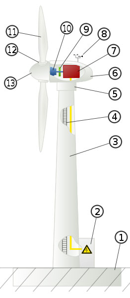
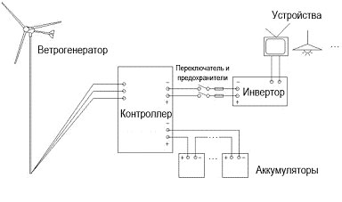
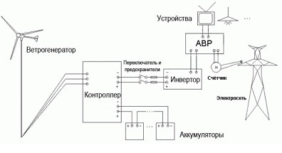
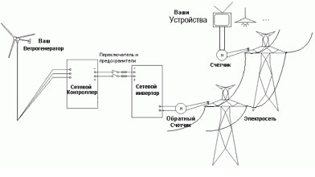
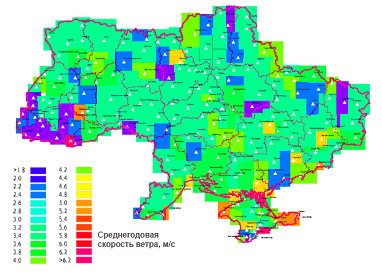

Некоторые современные бытовые ИБП имеют модуль подключения источника постоянного тока специально для работы с солнечными батареями
или ветрогенераторами. Таким образом, ветрогенератор может быть частью
домашней системы электропитания, снижая потребление энергии от
электросети.
Строение промышленной ветряной установки
 |
1. Фундамент
2. Силовой шкаф, включающий силовые контакторы и цепи управления
3. Башня
4. Лестница
5. Поворотный механизм
6. Гондола
7. Электрический генератор
8. Система слежения за направлением и скоростью ветра (анемометр)
9. Тормозная система
10. Трансмиссия
11. Лопасти
12. Система изменения угла атаки лопасти
13. Колпак ротора
Система пожаротушения
Телекоммуникационная система для передачи данных о работе ветрогенератора
Система молниезащиты
|
Типы ветрогенераторов
Существуют два основных типа ветротурбин: с вертикальной осью вращения и с горизонтальной.
Индустрия домашних ветрогенераторов активно развивается. Уже сейчас
за вполне умеренные деньги можно приобрести ветряную установку и на
долгие годы обеспечить энергонезависимость своему загородному дому.
Обычно для обеспечения электроэнергией небольшого дома вполне достаточно
установки номинальной мощностью 1 кВт при скорости ветра 8 м/с. Если
местность не ветреная, ветрогенератор можно дополнить фотоэлектрическими элементами
или дизель-генератором, а ветрогенераторы с вертикальными осями могут
быть дополнены более меньшими ветрогенераторами (например, турбина Дарье
может быть дополнена ротором Савониуса. И при этом одно другому не
мешает — источники будут замечательно друг друга дополнять).
Ветрогенераторы являются составной частью электрогенерирующего комплекса.
Компоненты электрогенерирующего комплекса
К основным компонентам системы, без которых работа ветрогенератора
(ВЭУ, ветряка, ветряной мельницы) невозможна, относят следующие
элементы:
Генератор – необходим для заряда аккумуляторных батарей. От
его мощности зависит, как быстро будут заряжаться ваши аккумуляторы.
Генератор необходим для выработки переменного тока. Сила тока и
напряжение генератора зависит от скорости и стабильности ветра.
Лопасти – приводят в движение вал генератора благодаря кинетической энергии ветра.
Мачта – обычно, чем выше мачта, тем стабильнее и сильнее
сила ветра. Отсюда следует – чем выше мачта, тем больше выработка
генератора. Мачты бывают разных форм и высот.
Дополнительные необходимые компоненты ветрогенератора (ВЭУ, ветряка, ветряной мельницы) :
Контроллер – управляет многими процессами ветроустановки,
такими, как поворот лопастей, заряд аккумуляторов, защитные функции и
др. Он преобразовывает переменный ток, который вырабатывается
генератором в постоянный для заряда аккумуляторных батарей.
Аккумуляторные батареи – накапливают электроэнергию для
использования в безветренные часы. Также они выравнивают и стабилизируют
выходящее напряжение из генератора. Благодаря им вы получаете
стабильное напряжение без перебоев даже при порывистом ветре. Питание
Вашего объекта идёт от аккумуляторных батарей.
Анемоскоп и датчик направления ветра – отвечают за сбор данных о скорости и направлении ветра в установках средней и большой мощности.
АВР – автоматический переключатель источника питания.
Производит автоматическое переключение между несколькими источниками
электропитания за промежуток в 0,5 секунды при исчезновении основного
источника. Позволяет объединить ветроустановку, общественную
электросеть, дизель-генератор и другие источники питания в единую
автоматизированную систему. Важно: АВР не позволяет работать сети одного объекта одновременно от двух разных источников питания!
Инвертор – преобразовывает ток из постоянного, который
накапливается в аккумуляторных батареях, в переменный, который
потребляет большинство электроприборов.
Инжиниринговая компания «Альтернативная энергетика»
комплектует ветрогенераторы турбиной, мачтой, лопастями, креплениями,
поворотным механизмом, контроллером, датчиком направления ветра.
Аккумуляторы, инвертор и дополнительно оборудование подбираются
индивидуально.
Есть три основных параметра, которые определяются индивидуально:
1. Выходная мощность ветроустановки (кВт), определяется только
мощностью преобразователя (инвертора) и не зависит от скорости ветра,
емкости аккумуляторов. Эта величина должна соответствовать количеству
электроэнергии, необходимому вашему объекту. Эти данные можно взять из
коммунальных счетов на оплату электроэнергии или рассчитать
самостоятельно, если объект находится в стадии строительства.
2. Время непрерывной работы определяется емкостью аккумуляторных
батарей (Ач или кВт). Эта величина зависит от желаемого времени
автономной работы вашей энергосистемы в безветренные периоды или
периоды, когда ваше потребление энергии из аккумуляторов будет превышать
скорость зарядки аккумуляторных батарей генератором.
3. Скорость заряда аккумуляторных батарей (кВт/час) зависит от
мощности самого генератора. Также этот показатель прямо зависит от
скорости ветра, а косвенно от высоты мачты и рельефа местности. Чем
мощнее ваше генератор, тем быстрее будут заряжаться аккумуляторные
батареи, а это значит, что вы сможете быстрее потреблять электроэнергию
из батарей и в больших объемах
4. Максимальная нагрузка на вашу сеть в пиковые моменты (измеряется в
киловаттах). Необходимо для подбора инвертора переменного тока.
Важно:
ветрогенератор должен успевать вырабатывать то количество
энергии, которое Вы потребляете. Мощность ветрогенератора – важная, но
второстепенная характеристика. Гораздо важнее его выработка – количество
созданной энергии за определенный период времени;
при подборе ветрогенератора, в первую очередь, важна
ветровая активность в заданных условиях местности, а уже потом –
мощность ветрогенератора;
ветрогенератор надо подбирать не по мощности, а исходя из объема энергии, который он вырабатывает в неделю (месяц, год).
Возможны несколько вариантов схем работы ветрогенератора. Одна из них
(схема автономного обеспечения объекта с аккумуляторами) изображена на
рис.1.

Рис.1. Принципиальная схема работы ветрогенератора (Off Grid)
Возможный вариант работы схемы: Ветер раскручивает лопасти ветряка,
тот в свою очередь вращает ротор ветрогенератора. На зажимах статора
возникает ЭДС, которая через контроллер выпрямляется и заряжает
аккумуляторы. К аккумуляторам через тот же контроллер подключен
инвертор, преобразующий электроэнергию постоянного тока в напряжение
фиксированной (промышленной) частоты и амплитуды.
Также возможны схемы подключения ветрогенератора на работу
параллельно с сетью (рис.2). Такие схемы позволяют переключаться на
энергию сети в случае отсутствия ветра. Городская сеть выступает в
качестве дополнительно-резервного источника питания.

Рис.2. Работа ветрогенератора с аккумулятором и коммутацией с сетью (Off Grid)
Подключение ветрогенератора на работу параллельно с сетью - без
аккумуляторных батарей (рис.3). Предложенная схема актуальна для
юридических лиц – субъектов хозяйствования Украины. В случае оформления
лицензии на право продавать электроэнергию и оформления «Зелёного
тарифа» можно генерировать энергию в сеть.
Такая схема работы пока не разрешена в Украине для частных лиц – в
отличии от многих других Европейских стран. Но является перспективным
вариантом с точки зрения постройки распределенных электростанций (Smart
Grid) в будущем. Технология Smart Grid — представляет собой систему,
оптимизирующую энергозатраты, позволяющую перераспределять
электроэнергию.

Рис.3. Работа ветрогенератора без аккумулятора на сеть (On Grid)
Достаточно сложным и дорогостоящим в схемах ветрогенераторов является
инверторы. Очень часто в качестве инверторов используют так называемые
каскадные многоуровневые преобразователи частоты, позволяющие из
большого числа независимых источников энергии с малым уровнем
постоянного напряжения (в качестве которых здесь используются
аккумуляторы) получить выходное напряжение промышленной частоты,
удовлетворяющие всем современным требованиям. Контроллер в каждой схеме
подключения ветрогенератора выполняет различные функции и строится на
основе микропроцессорной техники. Аккумуляторы являются самыми
недолговечными устройствами в схемах. К сожалению, электроэнергия
обладает одним очень серьезным недостатком: её сложно аккумулировать и
сохранять долгое время.
Места установки ветрогенераторов
Специалисты Инжиниринговой компании «Альтернативная энергетика» помогут Вам выбрать оптимальное место для установки ветрогенератора.
Наиболее перспективными местами для производства энергии из ветра
считаются прибрежные зоны. В море, на расстоянии 10—12 км от берега (а
иногда и дальше), строятся офшорные ветряные электростанции. Башни
ветрогенераторов устанавливают на фундаменты из свай, забитых на глубину
до 30 метров.
Ветрогенератор может быть установлен как на крыше дома, так и под окном городской квартиры, не зависимо от этажности дома.
Что касается регионов Украины, то наиболее перспективными для
строительства ветроэлектростанций являются Крым, Причерноморье,
Приазовье, Прикарпатье.
Ниже представлена карта ветров Украины на стандартной высоте
измерения ( 9 м от поверхности земли на равнине). По ней видно, что
скорость ветра практически везде одинакова, но в некоторых районах
Востока бывает больше штилей. Можно использовать метод увеличения высоты
мачты, который дает приближение реальной мощности ветрогенератора к
номинальной, но это приводит к конечному удорожанию конструкции.

Экономические аспекты ветроэнергетики
Перспективы ветроэнергетики, безусловно, огромны - запасы энергии
ветра более чем в сто раз превышают запасы гидроэнергии всех рек
планеты. И в отличие от атомной и тепловой, энергия ветра практически не
нуждается в ископаемом топливе.
Себестоимость электричества, производимого ветрогенераторами, зависит
от скорости ветра. Соответственно, выдача электроэнергии с
ветрогенератора в энергосистему отличается большой неравномерностью, как
в суточном, так и в недельном, месячном, годовом и многолетнем разрезе.
Решением этой проблемы является создание резерва мощности в
энергосистемах.
В настоящее время наиболее экономически целесообразно получение с
помощью ветрогенераторов не электрической энергии промышленного
качества, а постоянного или переменного тока (переменной частоты) с
последующим преобразованием его с помощью ТЭНов в тепло, для обогрева жилья и получения горячей воды. Эта схема имеет несколько преимуществ:
1. Отопление является основным энергопотребителем любого дома в Украине.
2. Схема ветрогенератора и управляющей автоматики кардинально упрощается.
3. Схема автоматики может быть в самом простом случае построена на нескольких тепловых реле.
4. В качестве аккумулятора энергии можно использовать обычный бойлер с водой для отопления и горячего водоснабжения.
5. Потребление тепла не так требовательно к качеству и
бесперебойности, температуру воздуха в помещении можно поддерживать в
широком диапазоне: 19—25°С; в бойлерах горячего водоснабжения: 40—97°С,
без ущерба для потребителей.
Экологические аспекты ветроэнергетики
Ветрогенератор мощностью 1 МВт сокращает ежегодные выбросы в атмосферу 1800 тонн СО2, 9 тонн SO2, 4 тонн оксидов азота.Возможно,
переход к ветроэнергетике позволит повлиять на скорость уменьшения
озонового слоя, и, соответственно, на темпы глобального потепления.
Турбины занимают только 1 % от всей территории ветряной фермы.
На 99 % площади фермы возможно заниматься сельским хозяйством или
другой деятельностью, что и происходит в таких густонаселённых странах,
как Дания, Нидерланды, Германия.
Фундамент ветроустановки, занимающий место около 10 м в диаметре,
обычно полностью находится под землёй, позволяя расширить
сельскохозяйственное использование земли практически до самого основания
башни. Земля сдаётся в аренду, что позволяет фермерам получать
дополнительный доход.
В отличие от традиционных тепловых электростанций, ветряные
электростанции не используют воду, что позволяет существенно снизить
нагрузку на водные ресурсы.
Специалисты Инжиниринговой компании «Альтернативная энергетика»
помогут Вам выбрать ветрогенератор максимально соответствующий по своим
техническим характеристикам Вашим потребностям, поставят и соберут его
на Вашем объекте, а также предостваят Вам все необходимые консультации
по работе ветрянной установки.
Монтаж оборудования может осуществляться как специалистами нашей компании, так и Вашими специалистами.
В случае возможности монтажа Вашими специалистами наша компания готова предоставить услугу шефмонтажа.
В случае осуществления монтажа Вашими специалистами, наша компания обеспечивает Вас техническим и информационным сопровождением.
Пожалуйста для выбора ВЭУ и ВЭС и совершения покупки перейдите в раздел нашего сайта Ветрогенераторы, модельный ряд .
На нашем сайте в разделе Статьи Вы сможете найти больше информации об альтернативных источниках энергии.
Ознакомиться с нашими работами Вы можете здесь - НАШИ РАБОТЫ